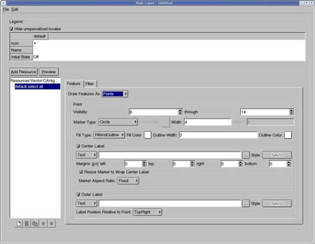
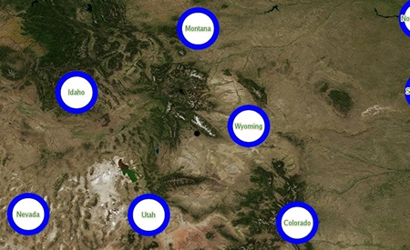
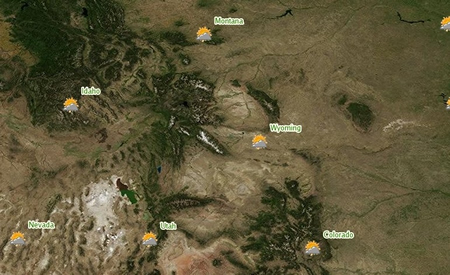
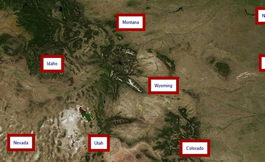

In addition to using Google Earth Enterprise Fusion to prepare and publish data in Google Earth, you can use it to prepare and publish 2D map data in Google Maps. This chapter describes all of the steps to prepare your data for Google Maps. It also describes the Google Fusion Maps API.
The first step in preparing any data for publication is to import the source data as Google Earth Enterprise Fusion resources. You can use the same vector resources you defined in the Defining Resources chapter for Google Maps.
Note: For Google Maps, you define vector data only. You can use the same imagery project for both Google Maps and Google Earth EC databases
After you define and build your vector resources, Google Maps requires an additional step. You must define and build at least one map layer for each map project. The Defining a Map Layersection describes how to do so.
The remaining steps are similar for Google Maps data as for Google Earth EC data.
Google Maps is supported by the following browsers:
Even if you are using a supported browser, there are some features in Google Earth Enterprise Fusion that are not supported by some browsers on certain operating systems. As long as you are connected to the Internet and have a license key for the Google Maps API, there is no problem (regardless of your platform), since your server contacts Google’s servers for functions that are not supported in the browser.
If you do not have a license key or access to the Internet, however, the following features will not work, since these features require that you connect to a Google server:
In addition, drawing polylines on maps requires the vector drawing facilities of the browser. If a browser does not support drawing polylines, Google Maps gets the support it requires from the Google servers via the Internet. If your server does not have access to the Internet and the browser does not have the required vector drawing facilities, polylines will not appear in Google Maps. See http://www.google.com/apis/maps/documentation/reference.html#GPolyline for more information.
Google provides a sample application with Google Earth Enterprise Fusion to support drawing polylines, if you are not connected to the Internet or do not have a license key for the Google Maps API. The sample application is in:
/opt/google/gehttpd/htdocs/mapsThe sample application files are:
example_google.html example_local.html maps_google.html maps_local.html
To create your own application, make a back-up copy of these files, and then edit them for the desired results.
Caution: Neither this document nor the sample application is intended to teach you how to write JavaScript. You must test your application during run-time to ensure that it works correctly on all browsers you intend to support.
Google Earth Enterprise supports the following types of imagery for a map layer:
Note: The Flat Projection Map us not compatible with the maps.google.com layers that are in the Mercator Map projection. A Mercator Map and Google Google Earth database require separate copies of the imagery to work together.
Defining a map layer consists of adding resources to the layer and defining the display rules and filters for the layer. This section describes how to do so.
 . The Map Layer Editor appears.
. The Map Layer Editor appears.
Google Maps saves the state of the check box when a user disconnects from the database. For example, if you set the initial state to Off, and then a user subsequently checks the box for a map layer in Google Maps and then disconnects from the database, the next time that user connects to that database, the state of the check box for that map layer is the same as when the user disconnected; that is, the box is checked.
Caution: If you select On as the initial state for the map layer, be aware of the performance impact on Google Maps. If a user selects too many map layers simultaneously in Google Maps, it can seriously impact performance. So it is best not to turn on too many map layers at the same time. In most situations, setting the initial state to Off is the best choice.
Determines which type of thematic information you want displayed in your map layer. Thematic filters are used to show variations of colors for different values of vector features.
For example, you can use color polygons to show population differences for different counties in a state. You can set the filter to analyze the distribution of populations for the set and then apply a gradient of color to each polygon that represents a county.
Determines if the same map feature is displayed.
Determines if an empty layer in the map is allowed.

 or
or
 to move them up or down.
to move them up or down.
Note: The order in which the resources are listed in this dialog reflects the order in which they are rendered in Google Maps, which affects visibility and label placement. The resource at the bottom of the list is rendered first and the resource at the top of the list is rendered last. So the resource at the top of the list is always visible.
For complete details about the buttons below the list of rules, see Additional Rule Configuration Options in the Defining Projects chapter.
The first option on the Feature tab is Draw Features As. Your selection determines the options available for you to specify:
 to
create a new folder in the desired location.
to
create a new folder in the desired location. Caution: Assets can not be deleted once they are saved. They can be cleaned, so that they are no longer available to use in Google Earth Enterprise Fusion; see Cleaning Asset Versions in the Building Assets chapter for more information.
This section describes your options when you select Label Only for Draw Features As in the Map Layer Editor.
The Insert Field drop-down list contains the names of all of the fields in your source data. Select a field name from the list, and click OK. For example, if you select NAME, the names of the roads appear in Google Earth EC.
The visibility range refers to the zoom level at which your labels are visible in Google Maps. The default values for the range are 8 and 14. That means that when a Google Maps user has a zoom level setting below 8 and above 14, the labels are not visible.
Caution: The default visibility range is much smaller that the default visibility range for vector layers destined for Google Earth EC. The reason is that building Google Maps databases can take significantly longer than building the same data for Google Earth EC. Even small increases to the end level of the range can add significant time to the build time.
The Text Style dialog appears.

Note: The only font that Fusion provides by default is Sans regular. To add fonts, including international fonts such as Chinese, Japanese, or Hebrew, you can create a configuration file called a "font list" file. See Configuring Fonts For the Text Style Dialog in the Administration Guide.
If you select Draw Background, you can specify the size and color of the background. The Preview area provides a preview of a sample label as you make changes.
Note: Setting the background size to less than 4 could potentially crop the edges of the text. Specifying too large a number can result in overlapping labels.
The new style is stored on that button, replacing any style previously assigned to that button. Each button name reflects the font face and size of the style, and it appears with the selected color and outline attributes.
After you save a style to a button, you can simply click that button to automatically select its text style settings for another label in the future.
This section describes your options when you select Lines for Draw Features As in the Map Layer Editor.
The visibility range refers to the zoom level at which your labels are visible in Google Maps. The default values for the range are 8 and 14. That means that when a Google Maps user has a zoom level setting below 8 and above 14, the labels are not visible.
Caution: The default visibility range is much smaller that the default visibility range for vector layers destined for Google Earth EC. The reason is that building Google Maps databases can take significantly longer than building the same data for Google Earth EC. Even small increases to the end level of the range can add significant time to the build time.
The default line width is 2. To change the line width, enter the desired value next to Line Width. The larger the number, the thicker the line.
Note: Setting the outline width to less than 1 could potentially make it invisible.
The Shield options are the same as the Label options, except that you can also specify the Outline Color for the shield. To do so, click the button next to Outline Color, and select a color.
This section describes your options when you select Polygons for Draw Features As in the Map Layer Editor.
The visibility range refers to the zoom level at which your labels are visible in Google Maps. The default values for the range are 8 and 14. That means that when a Google Maps user has a zoom level setting below 8 and above 14, the labels are not visible.
Caution: The default visibility range is much smaller that the default visibility range for vector layers destined for Google Earth EC. The reason is that building Google Maps databases can take significantly longer than building the same data for Google Earth EC. Even small increases to the end level of the range can add significant time to the build time.
The mode indicates whether the polygons appears as outlined, filled, or both in Google Maps. If you select:
The default outline width is 2. To change the outline width, edit the value in the text field. The larger the number, the thicker the outline.
Note: Setting the outline width to less than 1 could potentially make it invisible.
This section describes your options when you select Points for Draw Features As in the Map Layer Editor.
The visibility range refers to the zoom level at which your labels are visible in Google Maps. The default values for the range are 8 and 14. That means that when a Google Maps user has a zoom level setting below 8 and above 14, the labels are not visible.
Caution: The default visibility range is much smaller that the default visibility range for vector layers destined for Google Earth EC. The reason is that building Google Maps databases can take significantly longer than building the same data for Google Earth EC. Even small increases to the end level of the range can add significant time to the build time.

If you select:
Note: Setting the outline width to less than 1 could potentially make it invisible.
The following is an example of points that use a center label:

This example shows points with an icon marker type and an outer label:

This example shows a square marker type with a border:

A filter is a pattern expression that is applied to a specific field of a map layer. When the pattern expression matches the specified field in the associated vector data, Google Earth Enterprise Fusion selects the matching records and applies the feature settings for the rule to those records. Filters are inclusive. Specifying filters for map layers is identical to specifying filters for vector projects.
Note: Filters match string and numeric data only, not dates and other complex patterns.
This section describes defining map projects for Google Maps only. For information about defining vector projects for Google Earth EC, see the chapter titled Defining Projects.
The first step in defining a map project is to specify which map layers to include and give the project a name.
 . The Map Project Editor appears.
. The Map Project Editor appears.Note: The selection in the Type drop-down list near the bottom of this dialog determines the type of assets that appear on the list. Map Layer is automatically selected when you open this dialog from the Map Project Editor, so only map layers appear on the list.
The selected map layer appears in the Map Project Editor.
The value defined in the layer's Name field (at the top of the Map Layer Editor) appears under Legend Name, and the path and layer name appears under Layer.
The Layer Legend dialog appears.

The new legend name appears in the Map Project Editor.
Tip: If you ever want to return to the default label and initial state settings, right-click the layer and select Use Layer Defaults from the context menu.
 .
.
Alternatively, you can right-click the layer, and select Remove Layer from the context menu.
or to move the selected layer until it appears where you want it on the list.
Alternatively, you can right-click the layer, and select Move Layer Up or Move Layer Down from the context menu.
to create a new folder in the desired location.The new map project name appears in the Asset Manager’s asset list.

Caution: Assets can not be deleted once they are saved. They can be cleaned, so that they are no longer available to use in Google Earth Enterprise Fusion; see Cleaning Asset Versions in the Building Assets chapter for more information.
When you finish defining your map project, you can build it individually, build several projects at the same time, or wait until you build your database to build all of its projects at the same time.
When you modify and then save a map project, Google Earth Enterprise Fusion saves it in the same place with the same name as the original. If you modify a map project that you have already built, you must build a new version to make the changes available for use in a database.
After you create a map project, you can use the Asset Manager to modify it. Modifying a map project is exactly the same as modifying any vector project.
See Modifying Projects in the Defining Projects chapter for complete information.
This section provides information on defining map databases for Google Maps only. For information about defining databases for Google Earth EC, refer to the chapter titled Defining and Publishing Databases.
The Map Database Editor appears with no projects selected.
Note: The selection in the Type drop-down list near the bottom of this dialog determines the type of projects that appear on the list. Map Project is automatically selected, so only map projects appear on the list.
The selected project appears in the Map Database Editor next to Map Project.
If you check this box, you cannot select an imagery project. In those cases, the imagery is supplied by Google, and you can skip step 7.

Note: Any server that hosts a Google Geo Database must have access to the Internet. If you are not licensed to use the Google Geo Database and would like to know more about it, please contact Google Enterprise Support at enterprise-support@google.com.
Both projects appear on the list.
Note: This imagery project can be the same as one you use in a database that you publish to Google Earth EC.
to create a new folder in the desired location.
Now you are ready to build your database. See the Building Assets chapter for complete details.
Caution: Assets can not be deleted once they are saved. They can be cleaned, so that they are no longer available to use in Google Earth Enterprise Fusion; see Cleaning Asset Versions in the Building Assets chapter for more information.
Publishing a database for Google Maps is exactly the same as publishing a database for Google Earth EC, although the list of server associations is different.
See Publishing a Database for complete details. You can publish a map database only to the server associations designated as MAP type.
After you publish your database, you can view it in a browser.
serverURL/default_mapwhere serverURL is the full URL of the stream server to which you published the map database, including the protocol, the server location, and the port (if the port is other than the default, port 80). For example:
http://my_host_name/default_mapIf you are not sure which server you published to, contact your Google Earth Enterprise Server administrator for help.
Google Maps displays your database.
The Fusion Maps API is used to create and interact with map layers created in Google Earth Enterprise. The API is based on the Google Maps API but includes an additional GFusionMap class that will make it easier to interact with map layers generated by Google Earth Enterprise. The documentation for the Google Maps API is available at: http://code.google.com/apis/
Note that the Fusion Maps API does not currently support objects that require
calling URLs hosted at Google to operate. Objects that are not supported in the
Fusion Maps API include: GGeoXML, GClientGeocoder, GDirections, GAdsManager, GGoogleBarOptions, GDirections, GTrafficOverlay, GStreetViewPanorama, GStreetviewOverlay
Instantiate class GFusionMap in order to create a Fusion map. This is an extension of the GMap2 class, and the GFusionMap class should be used instead of GMap2 to create applications will use layers from Google Earth Enterprise.
| Constructor | Description |
|---|---|
GFusionMap(container, opts?) |
Creates a new Fusion map inside of the given HTML container, which is typically a DIV element. The options are the same as the options for GMap2. However, if a map type is passed in to the options, the Fusion maps server will override these if an imagery layer is included in the Fusion Maps Database. After this constructor is invoked, the setCenter() method should be called before any methods that display Fusion layers on top of the map. |
| Methods | Return Value | Description |
|---|---|---|
showInitialFusionLayers() |
none |
Show all layers that are enabled by default. This method should only be invoked after the setCenter() method has been called to initially draw the map. |
getFusionLayerCount() |
Number |
Returns the number of Fusion map layers. This does not include the base imagery layer, which is built as a custom map type and serves as the background of the map. |
isFusionLayerVisible(index) |
Boolean |
Returns true if the layer is currently shown on the map and false if it is hidden. |
showFusionLayer(index) |
none |
Shows a previously hidden Fusion map layer. This method should only be invoked after the setCenter() method has been called to initially draw the map. |
hideFusionLayer(index) |
none |
Hides the specified Fusion map layer. |
getFusionLayerName(index) |
String |
Returns the name of the specified layer. |
getFusionLayerIcon(index) |
String |
Returns the URL of the icon associated with the specified layer. |
Several examples are installed by default illustrate how to use the Fusion Maps API. You can find these examples in:
/opt/google/gehttpd/htdocs/maps
See the following files:
maps_local.html maps_google.html example_google.html example_local.html